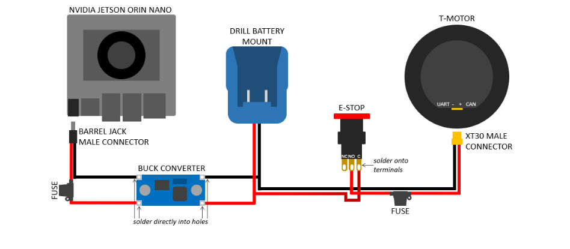

CAN transceiver interfacing Jetson microcontroller with T-motor drivers via Dupont connectors
Redesigned internal wiring architecture for reduced weight and better integration
Goal: Enhance user mobility by optimizing embedded wiring systems for lower inertia and improved cable management.
Challenge: Excessive cable weight and disorganized routing interfered with joint articulation and device responsiveness.
My Contribution: Designed and fabricated a custom harness with minimized wire length, secured connector interfaces, and optimized distribution, resulting in a 30% reduction in wiring mass.
Skills Used: Embedded Systems Wiring, Electrical CAD, Soldering, Connector Crimping, Harness Prototyping.
Outcome: Improved mechanical freedom, reduced cable fatigue, and enhanced real-time responsiveness during dynamic motion.
Goal: Reduce metabolic cost and improve joint coordination using real-time torque control informed by lower-limb biomechanics.
Challenge: Motion capture datasets were inconsistently labeled and incompatible with the model's input structure, hindering supervised learning approaches.
My Contribution: Refined marker placement protocol based on anatomical landmarks and developed a Python pipeline for interpolating missing frames, filtering sensor noise, and automatically labeling gait events.
Skills Used: Biomechanics Data Preprocessing, Motion Capture Calibration, Python (SciPy, NumPy, Pandas), Gait Phase Detection.
Outcome: Generated high-fidelity labeled datasets enabling phase-specific torque estimation for real-time control model training.